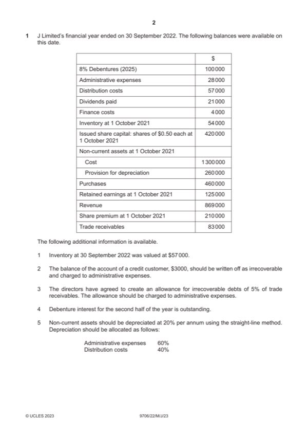

Question 1

Original paper page 2
Part 1(a) — solution
Prepare the statement of profit or loss for the year ended 30 September 2022. 11
J Limited
Statement of profit or loss for the year ended 30 September 2022
$
Revenue 869 000
Cost of sales (457 000) (1)
Gross profit 412 000 (1)OF
Administrative expenses W1 (191 000) (4)
Distribution costs W2 (161 000) (2)
Profit from operations 60 000 (1)OF
Finance costs (8 000) (1)
Profit for the year 52 000 (1)OF
W1 Administrative expenses
$191 000 (4)
Working $
Trial balance 28 000
Depreciation of NCA 156 000 (1)
Irrecoverable debts 3 000 (1)
Allowance for irrecoverable debts 4 000 (1)
191 000 (1)OF
2023 Page 6 of 15
9706/22 Cambridge International AS & A Level – Mark Scheme May/June 2023
Mark points
- Include the ideas shown in the solution above.
Part 1(a) — solution
W2 Distribution costs
$161 000 (2)
Working $
Trial balance 57 000
Depreciation of NCA 104 000 (1)
161 000 (1)OF
Mark points
- Include the ideas shown in the solution above.
Part 1(b) — solution
Calculate the balance of retained earnings at 30 September 2022 following 6
the bonus issue.
$86 000 (6)
Working
W1 Bonus issue:
$70 000 (3)
Working $
Share issue 280 000 (1)
Share premium (210 000) (1)
Retained earnings (70 000) (1)OF
$
Opening balance 125 000
Profit for the year 52 000 (1)OF
Dividends paid (21 000) (1)
Bonus issue W1 (70 000) (3)
Closing balance 86 000 (1)OF
2023 Page 7 of 15
9706/22 Cambridge International AS & A Level – Mark Scheme May/June 2023
Mark points
- Include the ideas shown in the solution above.
Part 1(c) — solution
State one reason why the directors of a company might decide to make a 1
bonus issue.
To reward/satisfy shareholders (1)
Insufficient liquid funds to pay a dividend (1)
To utilise the capital reserves of the company (1)
Max 1
Mark points
- Include the ideas shown in the solution above.
Part 1(d) — solution
Explain one reason why trade payables and potential lenders might approve 2
of a company making a bonus issue.
A bonus issue is a non-cash item (1) so therefore will have no effect on the
repayment of liabilities (1).
Mark points
- Include the ideas shown in the solution above.
Part 1(e) — solution
Identify three points the directors should consider when deciding whether to 3
pay a dividend.
The amount of profits/retained earnings available for distribution (1)
Liquid funds available to pay dividends (1)
Shareholders’ expectations/previous dividend payments (1)
Accept other valid responses.
Mark points
- Include the ideas shown in the solution above.
Part 1(f) — solution
Advise the directors which option they should choose. Justify your choice 7
by discussing both options.
Option 1 (Max 3)
Will encourage earlier payment by credit customers which will improve liquidity (1)
Reduce risk of irrecoverable debts/the need for an allowance for irrecoverable
debts (1)
Could result in increased sales which could improve cash flow (1)
Amounts received from credit customers will be less/Negative effect of cash
discount on cash flow (1)
Customers my not be encouraged to pay within 20 days (1)
Option 2 (Max 3)
Will reduce overall payments for purchases which will improve liquidity (1)
Positive impact on profits (1)
Will payment terms be favourable (1)
Will supplier prove reliable (1)
Will quality be maintained (1)
Decision supported by a comment (1)
Accept other valid responses.
2023 Page 8 of 15
9706/22 Cambridge International AS & A Level – Mark Scheme May/June 2023
Mark points
- Include the ideas shown in the solution above.
Part 1 — solution
525 (1)
Outstanding bankings (893) (1)
Balance as per bank statement (3 177) (1)OF
2023 Page 9 of 15
9706/22 Cambridge International AS & A Level – Mark Scheme May/June 2023
Mark points
- Include the ideas shown in the solution above.